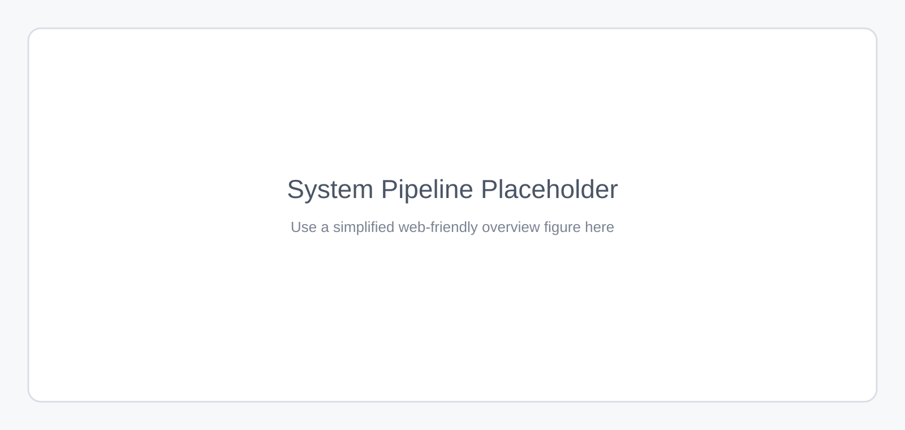
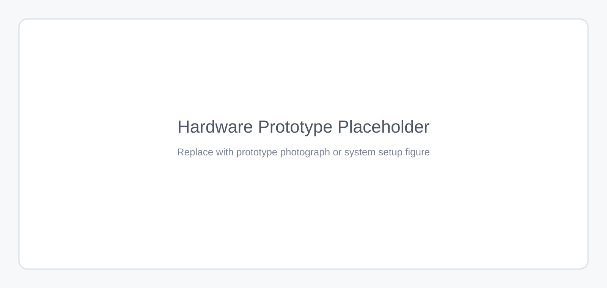
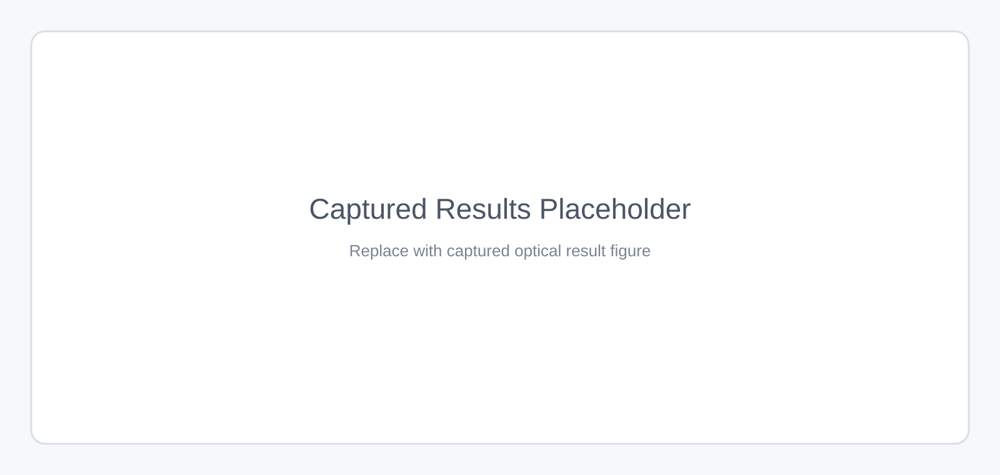

Towards Edge Holography via Implicit Neural Representation and Compression
The University of Hong Kong
IEEE Transactions on Visualization and Computer Graphics (IEEE VR 2026) (Best Paper Honorable Mention)
Abstract
Paste your final abstract here. This layout is intentionally kept close to the structure commonly used in academic project pages: title and metadata first, then a teaser or abstract image, followed by a compact abstract section before moving into the system pipeline and experimental results.
System Pipeline

assets/system-pipeline-placeholder.svg with a simplified web-friendly pipeline figure.
Experimental Results
Hardware Prototype

assets/hardware-prototype-placeholder.svg with your hardware setup figure or prototype photo.
Captured Results

assets/captured-results-placeholder.svg with representative captured optical results.
BibTeX
@article{ban2026edgeholography,
title = {Towards Edge Holography via Implicit Neural Representation and Compression},
author = {Ban, Hyunmin and Zhou, Wenbin and Peng, Yifan},
journal = {IEEE Transactions on Visualization and Computer Graphics},
year = {2026},
note = {IEEE VR 2026}
}